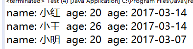

Java利用JDBC数据库操作
在学习之前我们首先了解一下什么是JDBC，JDBC有什么用。
JDBC是什么
- JDBC（Java Data Base Connectivity,java数据库连接）是一种用于执行SQL语句的Java API。
简单来说JDBC提供给我们程序对数据库之间的桥梁，使我们的程序操作数据库变得简单。利用JDBC可以使我们方便的操作数据库。
使用JDBC的好处
有了JDBC，向各种关系数据发送SQL语句就是一件很容易的事。换言之，有了JDBC API，就不必为访问Sybase数据库专门写一个程序，为访问Oracle数据库又专门写一个程序，或为访问Informix数据库又编写另一个程序等等，我们只需用JDBC API写一个程序就够了，它可向相应数据库发送SQL调用。
使用JDBC的先决条件
- JAVA编程
- SQL或者MySQL数据库
配置开发环境：
在这里你可以选择对应你数据库的Jar包，也可以下载多种数据库支持的Jar包。
由于我的数据库是MySQL，所以我使用专门的mysql-jdbc.jar
我使用的IDE是Eclipse，数据库管理工具是Navicat。
- 导入Jar包
右击你的Java项目打开Properties–>Java Build Path–>Libaries–>Add External JARs…找到Jar添加到你的工程 注册JDBC驱动程序
在使用JDBC之前需要注册这个驱动，我们利用反射注册这个驱动。12Class.forName("com.myaql,jdbc.Driver");conn = (Connection)DriverManager.getConnection(URL, USER, PASSWORD);通过反射注册MySQL的驱动程序，如果使用的是关于MySQL，SQL等多种数据库的集合，只需要把对应的驱动名填进去。
各种驱动的连接方法：
MySQL(http://www.mysql.com) mysql-connector-java-2.0.14-bin.jar ;
12Class.forName( "org.gjt.mm.mysql.Driver" );conn = (Connection)DriverManager.getConnection( "jdbc:mysql://MyDbComputerNameOrIP:3306/myDatabaseName", sUsr, sPwd );PostgreSQL(http://www.de.postgresql.org) pgjdbc2.jar ;
12Class.forName( "org.postgresql.Driver" );conn = (Connection)DriverManager.getConnection( "jdbc:postgresql://MyDbComputerNameOrIP/myDatabaseName", sUsr, sPwd );Oracle(http://www.oracle.com/ip/deploy/database/oracle9i/) classes12.zip ;
12Class.forName( "oracle.jdbc.driver.OracleDriver" );conn = (Connection)DriverManager.getConnection( "jdbc:oracle:thin:MyDbComputerNameOrIP:1521:ORCL", sUsr, sPwd );Sybase(http://jtds.sourceforge.NET) jconn2.jar ;
123Class.forName( "com.sybase.jdbc2.jdbc.SybDriver" );conn = (Connection)DriverManager.getConnection( "jdbc:sybase:Tds:MyDbComputerNameOrIP:2638", sUsr, sPwd );//(Default-Username/Password: "dba"/"sql")Microsoft SQLServer(http://jtds.sourceforge.Net) ;
12Class.forName( "net.sourceforge.jtds.jdbc.Driver" );conn = (Connection)DriverManager.getConnection( "jdbc:jtds:sqlserver://MyDbComputerNameOrIP:1433/master", sUsr, sPwd );Microsoft SQLServer(http://www.microsoft.com) ;
12Class.forName( "com.microsoft.jdbc.sqlserver.SQLServerDriver" );conn = (Connection)DriverManager.getConnection( "jdbc:microsoft:sqlserver://MyDbComputerNameOrIP:1433;databaseName=master", sUsr, sPwd );ODBC
12Class.forName( "sun.jdbc.odbc.JdbcOdbcDriver" );Connection conn = (Connection)DriverManager.getConnection( "jdbc:dbc:" + sDsn, sUsr, sPwd );
8.DB2
9.access由于access并不是作为一项服务运行，所以url的方法对他不适用。access可以通过odbc，也可以通过服务器映射路径的形式 找到.mdb文件,参见http://rmijdbc.objectweb.org/Access/access.html
- MyDbComputerNameOrIP 是你的数据库虽在服务器 IP地址:端口号
遍历
在这里我新建了一个student的数据库，并且新建了一个student_table的表,并且添加了三条测试数据（SQL语句就不再赘述）：
|
|
直接看结果：

添加
在对数据库的数据进行操作时，建议大家新建一个model数据类，来映射表内的数据：
StudetnData
|
|
添加操作：
我们可以利用JDBC的PreparedStatement类来执行我们的SQL语句
|
|
|
|
运行结果：
删除
我们利用ID来进行删除
|
|
|
|
执行结果：
更新（修改）
|
|
通过id来修改该行参数：
|
|
运行结果：
查找
|
|
Get(3); 结果：
模糊查询
我在表内添加了几天测试数据，我们利用SQL语句模糊查询表内name包含’小’的行。
|
|
执行Get1(“小”); 之后的结果：

到这里使用JBDC对数据库的增删改查操作就讲解完了，希望大家能Get到你想要的知识。
这是我的第一篇博客，我深知道比我学得好写得好的不计其数,我只是想单纯记录和分享一下我的学习历程，不喜勿喷，作揖 ~。